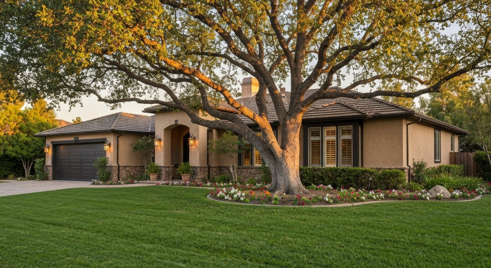

Trusted Real Estate Appraisals in Temecula & Riverside County
Independent valuations for estate, divorce, date-of-death, and pre-purchase needs — written to withstand scrutiny from attorneys, courts, and the IRS.
Appraisal Services
Independent, non-lender appraisals for attorneys, courts, estates, families, and individuals throughout Temecula and Riverside County.
Date of Death Appraisals
A date-of-death appraisal establishes the fair market value of a property as of the exact date someone passed away. This valuation is essential for es…
Learn more →Divorce Appraisals
A divorce appraisal provides an independent, defensible opinion of a home's fair market value so that marital property can be divided equitably. Famil…
Learn more →Estate & Trust Appraisals
Estate and trust appraisals establish the fair market value of real property for probate administration, trust distribution, and tax reporting. Execut…
Learn more →Bankruptcy Appraisals
A bankruptcy appraisal provides the credible, independent opinion of value that trustees, attorneys, and the bankruptcy court require to determine the…
Learn more →Expert Witness & Litigation Support
When a property value is contested in court, you need an appraiser who can both produce a defensible report and stand behind it under cross-examinatio…
Learn more →Pre-Purchase Appraisals
A pre-purchase appraisal gives you an independent, professional opinion of value before you commit to buying a home. In competitive markets it is easy…
Learn more →Pre-Sale Appraisals
A pre-sale appraisal helps you set the right asking price before you list. Pricing too high causes a home to sit; pricing too low leaves money on the …
Learn more →Tax Appraisals
Tax appraisals support property tax appeals, gift tax filings, and other tax-related valuations. Whether you believe your assessed value is too high o…
Learn more →Family Transaction Appraisals
When real estate changes hands between family members — a sale to a child, a gift, or an inter-family transfer — the IRS expects the transaction to re…
Learn more →Insurance Dispute Appraisals
When you and your insurer disagree about the value of a property or a loss, an independent appraisal provides the objective evidence needed to resolve…
Learn more →Bail Bond Appraisals
When real estate is pledged as collateral for a bail bond, the court and the bonding company need a credible appraisal to verify the property's equity…
Learn more →Immigration Appraisals
Certain immigration petitions require documentation of a sponsor's or applicant's real estate assets. I provide independent property appraisals that m…
Learn more →Why Choose Brian Ward Appraisal
Decades of local experience and reports built to hold up under scrutiny.

Certified & Experienced
California Certified Residential Appraiser with 20+ years of experience and 7,000+ completed appraisals across Riverside County.
Direct Communication
Work directly with the appraiser — no call centers, no runaround. Personal attention from start to finish.
Reports That Withstand Scrutiny
Every report is written to be clearly understood by attorneys, judges, the IRS, and financial institutions, with defensible conclusions.
Deep Local Knowledge
From Temecula Wine Country and the Santa Rosa Plateau to the San Jacinto Valley and the Coachella Valley, I know Riverside County's neighborhoods.
Responsive Service
I work efficiently to meet court deadlines and time-sensitive transactions. Contact me to discuss your timeline.
Fair, Transparent Pricing
Published fees starting at $299 with no hidden charges. Complex properties and rush delivery are quoted upfront.
Serving All of Riverside County
From the Temecula Valley to the Coachella Valley — click any community to learn about appraisal services in that area.
Ready to get started?
Request an appraisal online or call directly at (951) 309-2131.